Muroto, Kochi: things to do, food and stays
Muroto · Kochi
Muroto
Highlighted on the Kochi map.
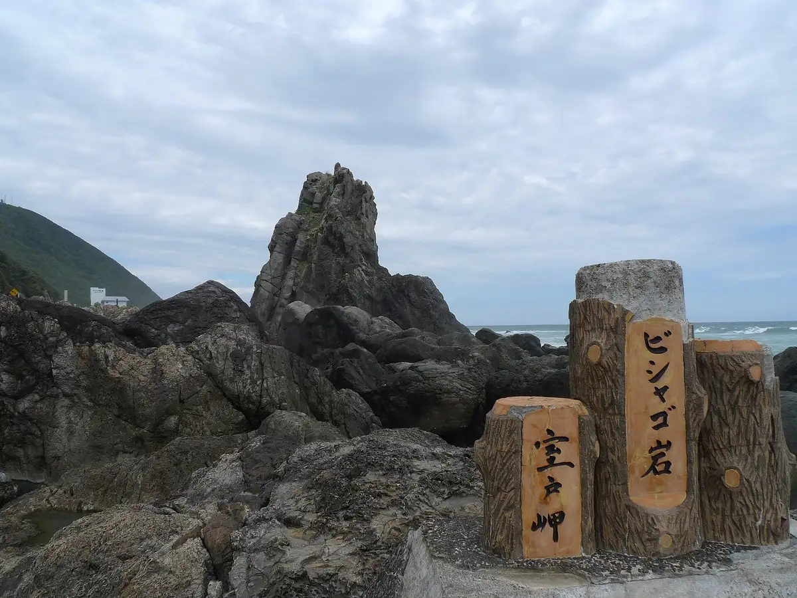
Stay
ホテル冨士
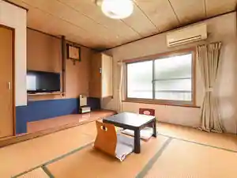
Hotel Fuji
室戸市自然体験型観光交流宿泊施設ＭＵＲＯＴＯｂａｓｅ５５
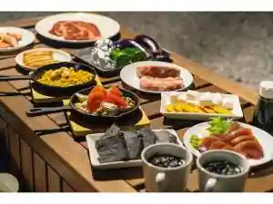
Murotoshi Shizentai Ken Kata Kanko Koryu Shukuhakushisetsu MUROTObase55
ニューサンパレスむろと
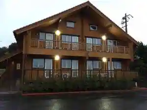
Nyusanparesu Muroto
ファミリーロッジ旅籠屋・室戸店
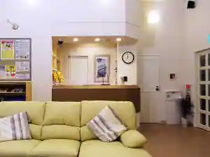
Famiri Lodge Hatago Ya Muroto
Mountain lodge in Muroto with breakfast available and family-friendly stays.
とろむグランピング高知
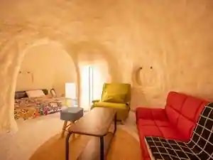
Toromu Guranpingu Kochi
スカイ アンド シー・ムロト
Sukai Ando Shi Muroto
岬観光ホテル
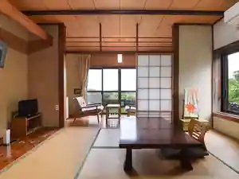
Misaki Kanko Hotel
宿玄
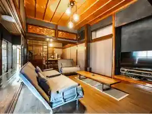
Yado Gen
きら玄
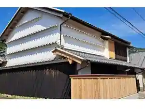
Kira Gen
Dining
料亭 花月
Ryotei Kagetsu
道の駅 キラメッセ室戸・食遊鯨の郷
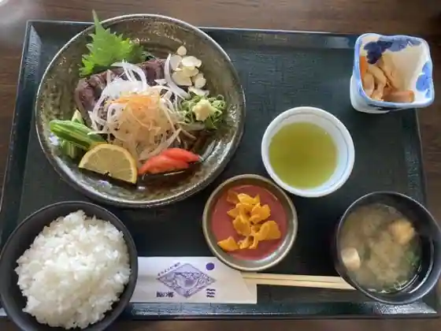
Michi No Eki Kiramesse Muroto Shoku Yu Kujira No Sato
釜飯 初音
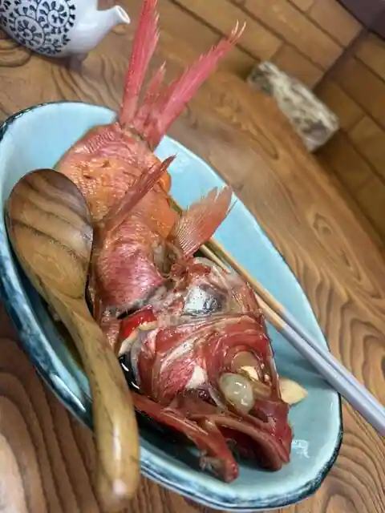
Kamameshi Hatsune
道の駅 キラメッセ室戸
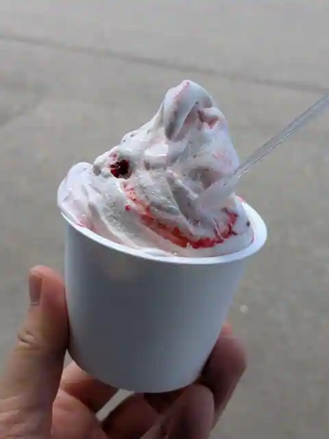
Michi No Eki Kiramesse Muroto
室戸荘
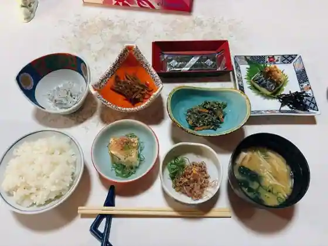
Muroto So
遍路の駅 夫婦善哉
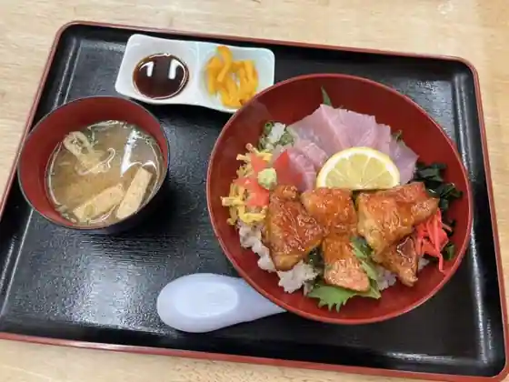
Henro No Eki Fufu Yoshiya
中町食堂
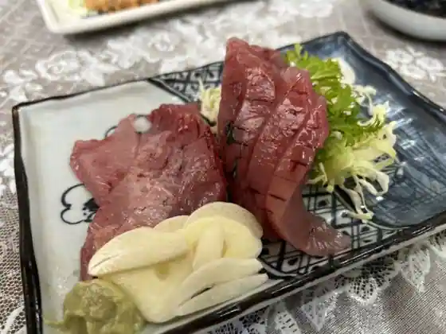
Nakamachi Shokudo
シットロト
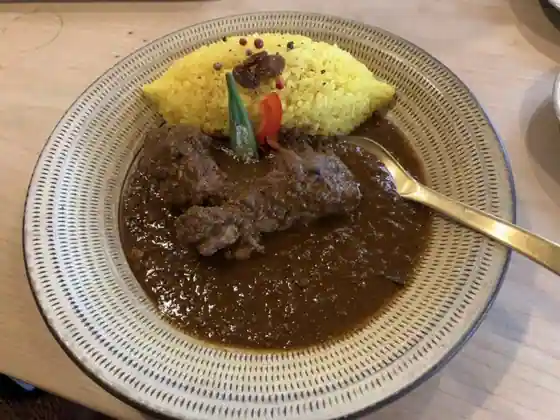
Shittoroto
駒季
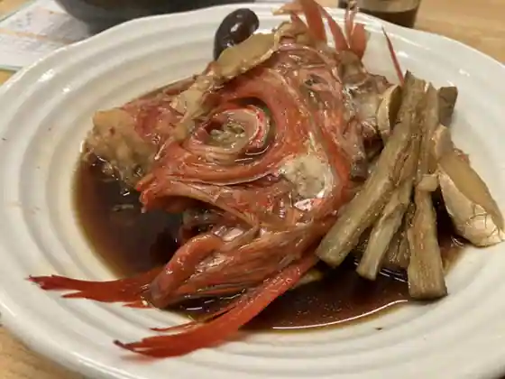
Koma Ki
室玄
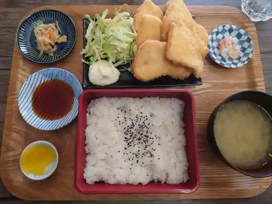
Shitsu Gen
海土
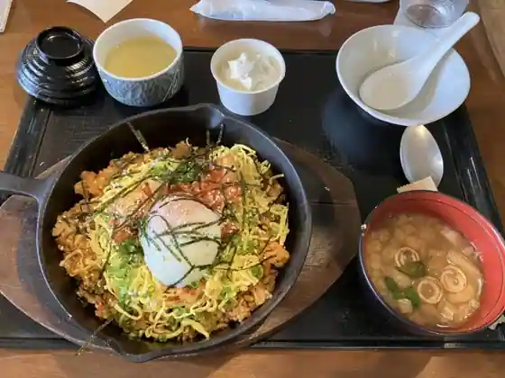
Umi Tsuchi
サンフィッシュ まんぼう
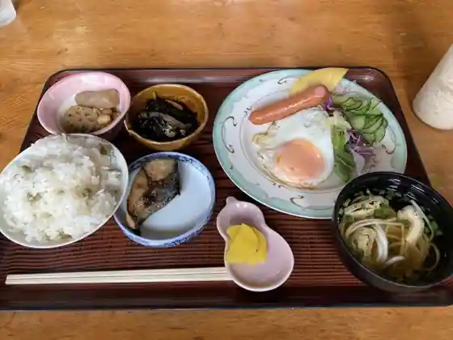
Sanfisshu Manbo
じゅ～じゅ～やまじゅう
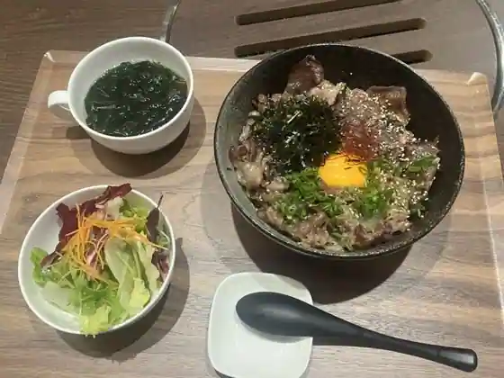
Ju ~ Ju ~ Yamaju
SADAMARU BURGER
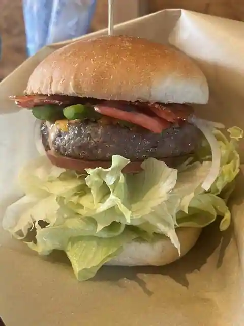
SADAMARU BURGER
ロッジおざき
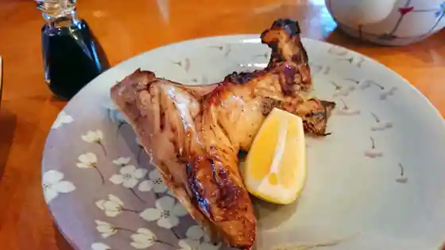
Lodge Ozaki
ドライブイン夫婦岩
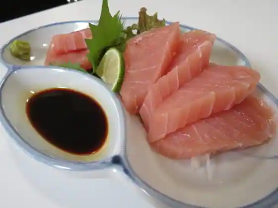
Doraibuin Fufu Iwa
野根まんぢう 福田屋 室戸店
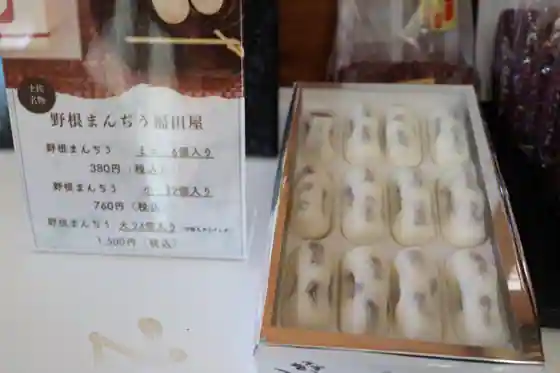
None Manjiu Fukuda Ya Muroto
徳屋
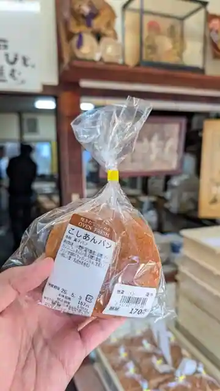
Toku Ya
立寿司
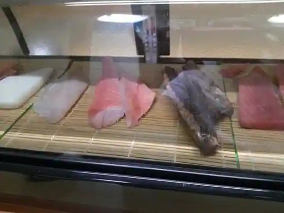
Ritsu Sushi
ジオカフェ
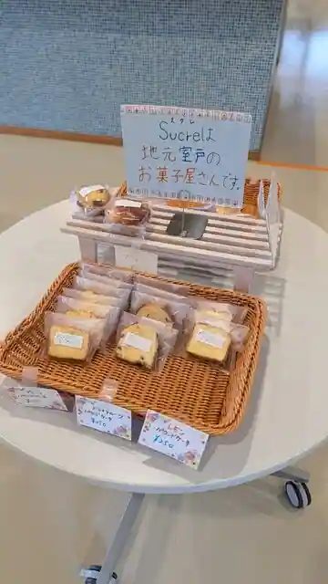
Jio Cafe
うまめの木
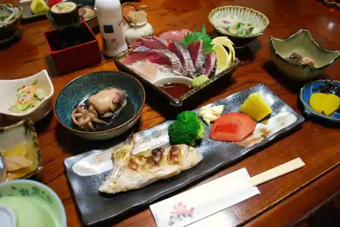
Umameno Ki
ジオカフェ ジオショップ
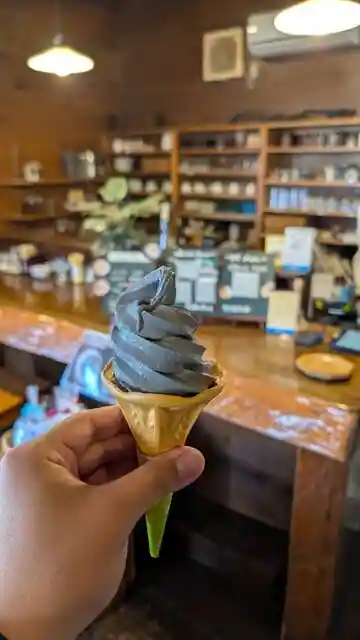
Jio Cafe Jioshoppu
Sights
Muroto Misaki
Muroto Misaki Lighthouse
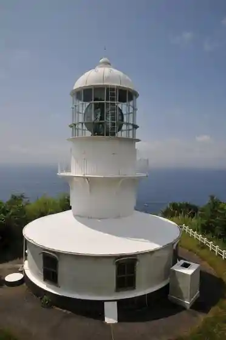
Muroto Haiko Aquarium
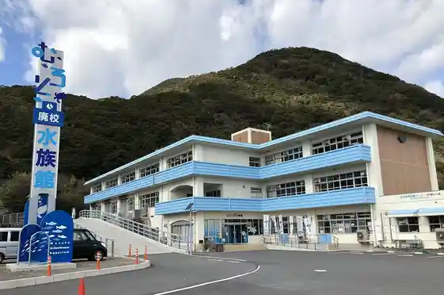
Kongo Itadaki Tera
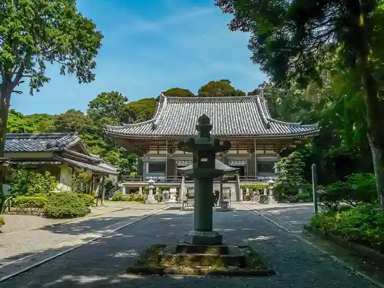
Sai Misaki Tera
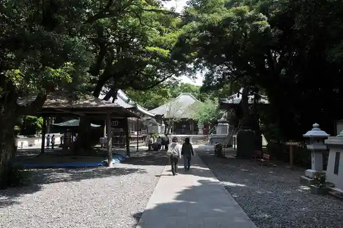
Mikuriya Nin Kutsu